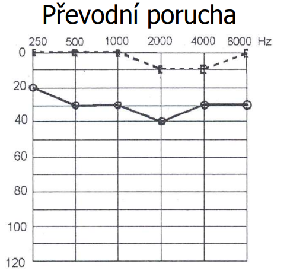
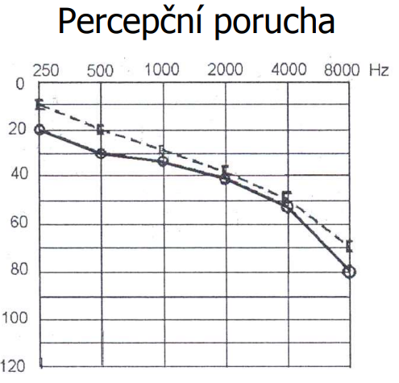
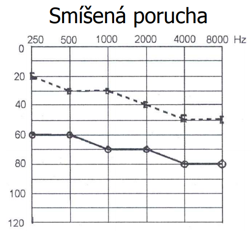

Klíčové pojmy
- Inferiorita — sociální nepoužitelnost, segregace jedince, nevytvoření či ztráta sociálních vztahů.
- Princip kompenzace ztráty sluchu sluchadlem — Vhodné sluchadlo je udělováno podle ztráty sluchu (ne všechna sluchadla kompenzují stejnou ztrátu sluchu)
- Základní součásti sluchadel — Mikrofon – zachycuje zvukové vlny z prostředí a přeměňuje je v elektrický signál
- Centra (střediska) rané péče — nabízejí pomoc při rozvíjení schopností dítěte, při výběru a úpravách vhodných hraček a pomůcek a při vytváření stimulujícího prostředí, které podporuje celkový vývoj dítěte
- Psychorehabilitační kurzy pro rodiče dětí — jednou ze součástí ucelení rané péče
- Pojem ucelená rehbailitace — skládá se ze čtyř složek: léčebná, pracovní, sociální a pedagogická
- Hlavní složky rehabilitace dětí se SP — včasná diagnostika vady umožňuje zahájit včasnou rehabilitaci
- Neslyšící jako jazyková a kulturní menšina — Neslyšící s velkým N jsou lidé, kteří se cítí být příslušníky jazykové a kulturní menšiny a identifikují se s ní
- Socializace osob se sluchovým postižením — Socializací se rozumí schopnost jedince zapojit se do společnosti
Cílové skupiny oboru surdopedie
Pozn.: … někteří lidé se sluchovou vadou se necítí být „sluchově postiženými“ – svoji vadu přijali, necítí se jí být omezováni, a proto své potřeby vnímají jako přirozené
- Rodiče neslyšících dětí
- sluchová vada dítěte má vliv na fungování celé rodiny
- rodiče jsou postaveni do nové neočekávané situace --> úskalí nastávají při výchově zejména v oblastech komunikace, kdy je často nutné naučit se znakový jazyk, dále výběr školy není zcela jednoduchý
- v krajních případech se může situace vyhrotit a vede k rozpadu rodiny
- Nedoslýchaví
- „Nedoslýchavost znamená každé zhoršení sluchu oproti běžné populaci, nikoliv však jeho úplné vymizení.“ (Hrubý)
- Nedoslýchavost je charakteristická vrozenou či získanou ztrátou sluchu, jedinec s nedoslýchavostí má v různé míře zachovány zbytky sluchu, které lze, v závislosti na jejich velikosti a s využitím sluchové protetiky využít v komunikaci či ve výchovně vzdělávacím procesu.
- Nedoslýchavost lze kompenzovat elektronickými sluchadly, dokonce i ztráty kolem 90 dB
- Nedoslýchavost je vrozená nebo získaná částečná ztráta sluchu, která bývá příčinou opožděného nebo omezeného vývoje mluvené řeči
- U nedoslýchavých dětí, dobře kompenzovaných sluchadly, lze mluvu rozvíjet spontánně sluchovou cestou může být deformovaná a opožděná
- Musíme dítě vést k tomu, aby to, co nemůže z mluvené řeči vnímat sluchem, aby doplňovalo zrakovým vnímáním (odezíráním) platí i u dospělých osob
- Nedoslýchaví jsou různorodá skupina je tvořena starými lidmi, protože zhoršení sluchu je fyziologickým důsledkem stárnutí
- Nedoslýchavost můžeme klasifikovat do různých stupňů
- Ohluchlí
- Ohluchlost je ztráta sluchu, která vznikla v období dokončování vývoje mluvené řeči nebo zasáhla do již vytvořené mluvené řeči jako komunikačního nástroje
- Řeč se nevytrácí, ale bývá postupně a zásadně deformována
- Ohluchlé osoby se dorozumívají psanou formou jazyka a mluvou na využití odezírání
- Se čtením a písemným projevem problémy nemají většinový jazyk si osvojili před ohluchnutím
- Pro zprostředkování sdělení je vhodnou formou písemný záznam mluvy v reálném čase
- Srozumitelnost vlastní mluvy ohluchlých je ovlivněna počtem let, po která jedinec neslyší
- Hlavní problémy při ztrátě sluchu ve vyšším věku představuje trénink schopností – odezírání a učení se komunikovat ve ZJ, dopad ztráty sluchu na jejich psychiku (znají cenu zvuku)
- Osoby s prelingvální hluchotou
- Dle WHO je za neslyšícího považován ten, „který ni s největším zesílením nevnímá žádný zvuk“ (pouze případně vibrace)
- Jako prelingválně neslyšící označujeme osoby, které se narodily plně neslyšící, nebo ztratily sluch před rozvojem řeči, a to tak, že absolutně, nebo mají jen nevyužitelné zbytky sluchových vjemů
- Vzdělávání prelingválně neslyšících je neobtížnější a nejodpovědnější pedagogickou disciplínou před učitelem většinou stojí průměrně až nadprůměrně inteligentní lidská bytost, která však má naprosto odlišné komunikační potřeby a možnosti než běžná populace záleží na učiteli a rodině, jestli najde správné metody, jak z něj vychovat úspěšného člověka, nebo ho odsoudí k funkční negramotnosti
- Dítě neslyšící od narození se nemůže přirozeně učit mluvenému jazyku, jelikož se osvojuje odposloucháváním a napodobováním pro takové dítě je přirozenou formou komunikace ZJ plně odpovídá smyslové výbavě dítěte
- To jaký přístup bude mít neslyšící dítě ke ZJ záleží na rodičích většina neslyšících dětí se rodí slyšícím rodičům
- Pokud bude neslyšící dítě zařazeno do školy pro SP setká se se ZJ zde poprvé
- Osvojování mluveného jazyka je pro prelingválně neslyšící velmi náročné vybudování mluvy (dítě bude schopné ji více či méně srozumitelně produkovat) bude mít problémy při její percepci může omezit a opozdit celkový jazykový vývoj
- Dříve označováni za hluchoněmé chyba jeho hlasové ústrojí je funkční a hlas může tvořit
- ZJ je primárním a přirozeným jazykem, ve kterém jsou schopni myslet a vyjadřovat se
- Neslyšící podle kulturní definice
- Neslyšící s velkým N jsou lidé, kteří jsou příslušníky jazykové a kulturní menšiny a identifikují se s ní
- Minorita Neslyšících se vůči majoritní společnosti vyčleňuje používáním ZJ a vlastní specifickou kulturou (vlastní historií, hodnotovými měřítky, společenskými zvyklostmi, tradicemi a normami, rozdílnými problémy, potřebami a životní filozofií)
- Tzv. kulturní definice hluchoty se poprvé objevila v zákoně o znakové řeči: „…osoby …, které samy považují znakovou řeč za primární formu své komunikace“ (Zákon č. 155/1998 Sb. o znakové řeči) [od 20. 10. 2008 zákon o komunikačních systémech neslyšících a hluchoslepých osob]
- Příslušníci jazykové a kulturní skupiny Neslyšících jsou uživateli ZJ a svou hluchotu nepovažují za postižení
- Nepovažují se za postižené jedince a odmítají snahy ze strany slyšící většiny o „nápravu a léčení“ jak z hlediska medicínského a technického, tak z hlediska socio-kulturního, tj. osvojení si norem a jazyka většinové společnosti a plné začlenění do ní
- Aby člověk mohl přijmout svou hluchotu jako sociokulturní jev musí být v kontaktu s dalšími Neslyšícími
Aktualizace 2026
Zákon č. 155/1998 Sb. platí, ale novelou 384/2008 Sb. byl přejmenován na zákon o komunikačních systémech neslyšících a hluchoslepých osob. Zastřešující pojem „znaková řeč“ se opustil: zákon dnes rozlišuje český znakový jazyk jako samostatný jazyk a komunikační systémy vycházející z českého jazyka (znakovaná čeština, prstová abeceda, Lormova abeceda…).
- Osoby s kombinovanou sluchovou a zrakovou vadou (hluchoslepí)
- „Hluchoslepota je jedinečné postižení dané různým stupněm souběžného poškození zraku a sluchu. Způsobuje potíže při komunikaci, prostorové orientaci a samostatném pohybu, sebeobsluze a přístupu k informacím. Zabraňuje hluchoslepému člověku plnohodnotně se zapojit do společnosti a vyžaduje zajištění odborných služeb, kompenzačních pomůcek a úpravy prostředí.“
- Tyto osoby vyžadují individuální a specifický přístup, zvláště v oblasti výchovy, vzdělávání a sociální rehabilitace
- Šelestáři
- Skupina osob trpící ušními hluky nebo šelesty (tinnitus), což jsou sluchové vjemy, pro něž neexistuje zvukový zdroj ve vnějším prostředí a které výhradně slyší jen postižený a jsou velmi nepříjemné
- Šelesty vznikají ve sluchovém orgánu, nebo jeho okolí a projevují se různou intenzitou hučením, pískáním, šuměním, zvoněním až rachocením
- Ušními šelesty trpí velká část osob se sluchovou vadou, dokonce osoby zcela neslyšící
- Šelesty se mohou objevit i u normálně slyšících jedinců
- Ušní šelesty mají velký dopad na psychiku člověka šelest je nepříjemný a obtěžující
- Terapie šelestů neexistuje
- Šelesty se dělí na objektivní a subjektivní objektivní šelest se dá „léčit“ – zablokování krční páteře, vysoký krevní tlak, subjektivní šelest – příčina neznámá, terapie spočívá ve snižování subjektivního vlivu šelestu na člověka (tzv. naučit se s ním žít)
- Slyšící děti neslyšících rodičů – CODA – (hearing) Children Of Deaf Adults
- Slyšící dítě neslyšících rodičů vyrůstá bilingválně a bikulturálně osvojí si mluvený jazyk od prarodičů, v MŠ) i český znakový jazyk
- Má kulturní povědomí o životě a komunitě neslyšících, ale ovládá zvyky slyšících lidí
- Tyto děti jsou svým rodičům průvodci
- Tlumočí svým rodičům již od raného věku, což narušuje jejich harmonický vývoj
- Děti ještě nemají jazykovou zralost, dítě je nekompetentní, kognitivní vývoj dítěte je na jiné úrovni než u dospělých, celková vyspělost dítěte neodpovídá dané situaci a dítě musí snášet negativní přístupy slyšících k hluchotě působí na vývoj dítěte – vznik frustrace a psychických problémů
- Slyšící děti neslyšících rodičů se velmi často stávají tlumočníky problém v neprofesionalitě a nedostatečném teoretickém základu tlumočení
- Uživatelé KI
- Nejdříve se používal pro dospělé ohluchlé osoby teď se převážně implantují děti ohluchlé nebo prelingválně neslyšící
- Příslušníci komunity Neslyšících implantaci odmítají z obavy o kulturu a tradice společenství Neslyšících a zpochybňují právo rodičů rozhodnout o operaci dítěte a jeho dalším životě
- Využitelné zbytky komunikace podporují rozvoj orální komunikace
- Očekávaný přínos KI umožnění rozumět řeči
- KI nemůže nahradit sluch v plném rozsahu
- Maximální přínos KI je možný po dlouhodobé rehabilitaci implantovaného – postupné nastavování řečového procesoru, učení se slyšet a rozumět zvuků, a mluvě
- Výsledek rehabilitace ovlivňují různé faktory:
- druh a příčina těžké sluchové vady,
- doba vzniku vady a doba prodlevy od operace,
- psychické a kognitivní charakteristiky, přidružená omezení,
- jazykové nadání jedince, individuální schopnosti,
- vytvoření komunikačního systému a rozvoj komunikace před implantací (ZJ),
- dostupnost odborné péče, spolupráce rodiny
- Přínos KI je individuální
- Děti do 2 let po implantaci – rozumí řeči bez odezírání či používají telefon, mluví v rozvitých větách a jejich mluva je dobře srozumitelná nejlepší výsledky mají děti operované do 2 let
- Implantované osoby jsou nadále osoby se SP signálový procesor je napájen bateriemi při sundání procesoru přestanou slyšet
Diagnostika sluchových vad
- metody vyšetření sluchu rozdělujeme na metody subjektivní a metody objektivní
- jelikož při vyšetřování sluchu pomocí subjektivních metod vyžadujeme spolupráci vyšetřované osoby a musíme se na ni stoprocentně spolehnout, lze je použít pouze v případech, kdy je tato spolupráce možná
- v ostatních případech, např. při vyšetřování novorozenců a malých dětí, osob s mentální retardací či osob, u kterých máme podezření na simulaci či agravaci sluchového handicapu lze použít výhradně metody objektivní, které spolupráci vyšetřované osoby nevyžadují
- včasné odhalení vady sluchu má význam z toho důvodu, že v mozku narozeného dítěte jsou připravena centra pro vykonávání činností ů ovládání pohybu končetin apod plasticita mozku – důležité odhalení vady sluchu v co nejranějším věku
- dnes je možné díky moderním vyšetřovacím metodám možné stanovit podezření na sluchovou vadu již v prvních dnech novorozeneckého věku pomocí zkoušky otoakustických emisí
Subjektivní vyšetřovací metody
- nejstarší metody vyšetření sluchu, jejichž cílem je orientačně stanovit typ sluchové vady, její stupeň a lateralizaci
- tyto metody jsou pokládány za orientační, neboť nám odhalí pouze to, zda se u jedince sluchová vada vyskytuje, popř. jejich pomocí můžeme v některých případech rozpoznat i její typ, v žádném případě nám však neposkytnou informace o přesné hodnotě ztráty sluchu či o úrovni percepce zvuků na různých frekvencích
- mezi základní subjektivní vyšetřovací metody řadíme vyšetření hlasitou řečí, vyšetření šepotem a vyšetření ladičkami
orientační sluchové zkoušky
- v principu se využívá v novorozeneckém období při vyšetřování sluchu orientačních akustických nepodmíněných a podmíněných reflexů – při správné aplikaci jsou však těmito metodami zachyceny pouze velmi těžké sluchové vady
- mezi nepodmíněné reflexy patří:
- reflex víčkový – na zvukový podnět silnější intenzity se prudce sevřou víčka strany, ze které sluch přichází
- reflex zornicový – po zvukovém podnětu dojde k rychlému stahu zornice a k jejímu následnému pomalému rozšíření
- orientační reflex – při silném zvuku dojde k reakci novorozence tak, že se zastaví dýchací pohyby, dítě se rozpláče apod.
- pátrací reflex – u půlročních dětí lze sledovat pátrací reflex, dítě se otočí po směru, odkud zvuk přichází
- podmíněné reflexy – jsou už dnes při screeningovém vyšetřování používány málo
- jsou to reakce na zvuky okolních předmětů, dítěti známých – cinkání lžičky o hrníček, zvuky hraček, dítě by samozřejmě předměty nemělo vidět
- klasická sluchová zkouška
- základní vyšetření sluchu – klasická zkoušky hlasitou řečí a šepotem
- všeobecně je stanovena vzdálenost 6 m nebo 10 m v tiché místnosti
- vyšetřuje se každé ucho zvlášť a zamezí se odezírání tak, že vyšetřovaný stojí bokem
- vyšetřující předříkává slova a vyšetřovaný je má opakovat
- slova obsahující hluboké a vysoké frekvence
- výsledky zkoušky jsou pouze orientační
- hodnotí se podle vzdálenosti, ve které vyšetřovaná osoba stojí a podle rozdílu mezi opakováním hlubokofrekvenčních a vysokofrekvenčních slov, též z rozdílu mezi hlasitou a šeptanou řečí se může rozeznat typ sluchové vady
- ladičkové zkoušky
- zkouška, pomocí které by mělo dojít k upřesnění typu sluchové vady
- pomocí ladičky o přesně dané frekvenci můžeme posoudit, zda jedinec slyší lépe hluboké nebo vysoké tóny, což umožňuje diagnosticky odlišit převodní a percepční vadu a je vodítkem pro správný postup audiometrického vyšetření
- provádí se vždy až po vyšetření sluchu hlasitou řečí nebo šepotem
- Weberova zkouška – rozkmitaná ladička se přikládá na temeno nebo čelo pacienta, ten má za úkol určit, ve kterém uchu slyší lépe tón ladičky
- U této zkoušky se porovnává kostní vedení obou uší. Ladička je přiložena patkou do střední roviny lebky
- Pacient se sluchem v normě slyšel zvuk souměrně v obou uších
- Pacient slyšel ladičku lépe zdravějším uchem (percepční vada)
- Pacient slyšel ladičku horším uchem (převodní porucha)
- Rinného zkouška – nejčastější z ladičkových zkoušek
- informuje o tom, zda je u pacienta lepší vedení vzdušnou cestou nebo kostním vedením
- ladička se přikládá střídavě před ucho a na processus mastoideus (bradavkovitý výběžek spánkové kosti)
- při normálním sluchu je slyšení pro vzdušnou cestu lepší, při poškozeném středoušním systému udává pacient lepší slyšení přes kostní vedení (zvuk obchází překážku ve středouší a je veden přímo do vnitřního ucha)
- Zjišťuje se, zda je lepší kostní nebo vzdušné vedení.
- U této zkoušky se přidržuje rozkmitaná ladička v určité vzdálenosti od ucha (bradavkovitý výběžek spánkové kosti). V okamžiku, kdy již pacient zvuk neslyší, se umístí ladička na kost za uchem.
- Pokud pacient ladičku znovu uslyšel, trpěl převodní vadou lepší kostní vedení Rinné negativní
- Pokud už ladičku neslyšel, trpěl pravděpodobně percepční vadou lepší vzdušné vedení Rinné pozitivní
- Schwabachova zkouška (moc se nepoužívá)
- Patku rozkmitané ladičky přikládal Schwabach na boltec pacienta a vyčkával, dokavaď pacient už ladičku neuslyší. Poté si rychle patku přiložil na svůj boltec. Pokud už také ladičku neslyšel, měl pacient sluch v pořádku.
- převodní porucha = Schwabach je prodloužený
- percepční porucha = Schw. je zkrácený
- subjektivní audiometrie
- k přesnému zkoušení stavu sluchu slouží speciální elektroakustické přístroje zvané audiometry, zkouška se provádí ve speciálně upraveném prostředí
- při audiometrickém vyšetření se zaznamenávají prahové hodnoty slyšení čistých tónů
- výsledek vyšetření se zaznamenává do tzv. ztrátového audiogramu (sleduje se ztráta citlivosti slyšení oproti normě)
- hodnoty sluchového prahu na jednotlivých kmitočtech se pro pravé ucho zaznamenávají červenými kolečky,
- pro levé ucho modrými křížky,
- vzdušné vedení je znázorněno plnou čárou,
- kostní vedení čárou přerušovanou
- při tomto vyšetření se určuje práh slyšení pro vzdušné a kostní vedení
- při vyšetření určujeme sluchový práh pro vzdušné a kostní vedení
- dětská audiometrie
- obtížné a podaří se nejdříve ve věku 3 let
- audiometrické vyšetření čistými tóny je třeba nejdříve nacvičovat a provádět formou hry
- v podstatě je nacvičován podmíněný reflex, kdy dítě na uslyšený zvuk uchopí a přemístí barevnou kostku nebo navlékne kroužek na stojánek
- po 4 až 5 denním nacvičování je možné stanovit úroveň sluchového prahu pro vzdušné vedení, pro kostní je to obtížnější
- slovní audiometrie
- Podává informaci o tom, jak vyšetřovaný rozumí mluvě (tzv. diskriminace řeči). Je přesnější než sluchová zkouška šepotem a hlasitou řečí, ale je časově náročnější.
- Vyšetřovanému se přehrávají soubory testovacích slov (10), postupně v různých intenzitách.
- Vyšetření lze provádět pouštěním slov do sluchátek či přímo do volného prostoru místnosti, a tím napodobovat běžné podmínky poslechu. Vyšetřovaný slovo opakuje, popř. řekne „nevím“ či jej vůbec nezaslechne. Slova jsou rozdělena do skupin po deseti a musí zde být zastoupena slova jedno-, dvou- a víceslabičná. Slova musí obsahovat hlásky hlubokých i vysokých frekvencí a musí být obecně známá.
- Slovní audiometrie spočívá v tom, že je možno ji provést bez sluchadla i se sluchadlem, a tak jednoznačně změřit skutečný přínos daného sluchadla pro pacienta.
- Prezentováno 10 slov na stejné intenzitě, z počtu správných odpovědí je vypočítáno procento srozumitelnosti.
- podstata vyšetření sluchu pomocí slovní audiometrie je stejná, jako u vyšetření audiometrií tónovou s tím rozdílem, že je vyšetřovanému do sluchátek či do volného pole místo čistých tónů přehrávána sada vybraných slov, které svou délkou i kmitočtovou stavbou odpovídají normální řeč
- každá sada obsahuje sto slov, které jsou rozděleny do dekád, v každé dekádě jsou čtyři slova se středními, tři slova s hlubokými a tři slova s vysokými formanty
- vyšetřovaná osoba slova opakuje, zaznamenává se, kolik slov reprodukovala správně



- Tónová audiometire
- Je nejběžnější diagnostickou metodou ke zjišťování ztráty sluchu – slouží ke stanovení prahu slyšení a velikosti sluchové ztráty
- Audiometr je elektrický generátor čistých tónů, jejichž kmitočet lze nastavit jedním knoflíkem
- Druhým knoflíkem lze nastavit akustický tlak, jaký tento tón vyvolává ve sluchátku nebo v kostním vibrátoru.
- Provádí se v tichých komorách, pacient je poučen a má sluchátka
- Provádí ji audiologická sestra nebo lékař
- Vyšetření začíná lepším uchem.
- Do sluchátek jsou vyšetřovanému postupně pouštěny čisté tóny o různých frekvencích
- Nastavíme jeden kmitočet a postupně přidáváme hlasitost, dokud pacient neoznámí, že právě zaslechl zvuk (práh slyšení)
- Čím je audiogram hlouběji, tím větší ztráta sluchu.
- Audiometrem měříme práh slyšení
- Cíl: vyhledání sluchového prahu a velikosti sluchové ztráty.
- Umožňuje vyšetřit vnitřní ucho (vnější ucho – vyšetření pohledem, střední ucho – tympanometrie)
- Její výsledky se zaznamenávají do grafu – „tónový audiogram je grafické znázornění závislosti velikosti ztráty sluchu na kmitočtu (frekvenci)“
- Vyšetření se provádí na každém uchu zvlášť
- U dětí se využívá omezeně
- Ztráta sluchu je pro různé kmitočty různá.
Objektivní vyšetřovací metody
- Tympanometrie
- pomocí tympanometrie zkoumáme odpor bubínku v závislosti na tlakových změnách ve zvukovodu
- podává informaci o stavu středouší a Eustachovy trubice
- Zaměřeno na středoušní funkci
- vyšetřovací metoda hodnotící závislost mezi odrazem zvukové energie od bubínku zpět k tympanometru a změnu tlaku v zevním zvukovodu
- Princip: meřené množství akustické energie ve vnějším zvukovodu odráží se od blanky bubínku závislé na jeho tuhosti, řetězu kůstek a obsahu středního ucha
- Výsledkem měření je graf (tympanogram) udává závislost poddajnosti středního ucha (bubínku a středoušních kůstek) v závislosti na tlaku ve zvukovodu
- Do zvukovodu se zasune sonda přivádí do ucha měřící akustický signál současně se ve zvukovodu mění tlak měřícím mikrofonem v sondě se měří odražená část energie
- Otoakustické emise
- Otoakustické emise jsou zvuky vydávané vláskovými buňkami mohou být spontánní nebo evokované
- Pro diagnostické využití je důležité, že otoakustické emise lze vyvolat krátkým slabým čistým tónem (tzv. klik) – označují se jako tranzitně evokované otoakustické emise (TEOAE)
- Výbavnost emisí znamená, že jsou přítomny sluchové buňky ve vnitřním uchu a že správně reagují na vnější akustický podnět v praxi to lze chápat tak, že práh sluchu vyšetřovaného ucha nepřesahuje ztrátu 30 dB
- Jednoduché a přesné vyšetření nevyžaduje aktivní spolupráci vyšetřovaného dítěte časově nenáročné a šetrné lze provést krátce po porodu
- Při screeningu se nejčastěji používají čtyři kmitočty: 2 kHz, 3 kHz, 4 kHz a 5 kHz.
- Za pozitivní výsledek (slyší) se považuje, pokud se na třech ze čtyř stimulačních kmitočtů podaří vyvolat OAE s amplitudou převyšující hladinu šumu alespoň o 5 dB.
- pokud nevyjdou po porodu --> do 1 měsíce na BERA - to, že nevyšly po porodu může znamenat, že v uších byla ještě plodová voda
- screeningová orientační vyšetřovací metoda
- screening sluchu novorozenců – screening je povinen pouze u tzv. rizikových skupin, porodnice v ČR jinak povinnost nemají (naopak v jiných zemích je vyšetření zavedeno celoplošně)
- vyšetření otoakustických emisí je založeno na poznatku, že vláskové buňky Cortiho orgánu se po zvukovém podráždění rozvlní, čímž produkují velice slabé zvuky, tzv. otoakustické emise, které jsou vysílány směrem k bubínku
- tyto velice slabé zvuky je možno citlivým mikrofonem v zevním zvukovodu snímat
- pokud jsou otoakustické emise výbavné, znamená to, že je funkce vnitřního ucha, resp. Cortiho orgánu neporušena
- BERA
- kmenová audiometrie
- prováděna u dětí během spánku
- Jedná se o nejčastěji využívané vyšetření sluchových potenciálů
- CERA
- vyšetření korových potenciálů
- provádí se u dospělých osob
- objektivní audiometrie
- vyšetření prahu sluchu nezávislé na spolupráci pacienta, tudíž se dají objektivní metody aplikovat i v raném věku dítěte
- hodnocení funkčního stavu příslušné nervové dráhy
- reakce na zvukové podněty v kůře mozkové, kochlee, sluchovém nervu a mozkovém kmeni
Funkční diagnostika
= funkční posouzení sluchových schopností, tj. potenciál, jak umí sluch „používat“
- nutné je důkladné posouzení sluchových schopností, protože stejná diagnóza může mít různý dopad na funkční využití sluchu („jak klient skutečně slyší v různých situacích“, slyšení v různém zvukovém prostředí, používané pomůcky apod.).
- pro plánování intervence mají stěžejní význam výpovědi klienta a praktické výsledky funkční diagnostiky.
Screening vad sluchu v ČR
- Screening = aktivní vyhledávání pacientů
- Cíl= včasná detekce a rehabilitace poruch sluchu
- Celoplošný screening se provádí ve všech okolních státech - Polsko, Německo, Slovensko
- Hodně může odhalit i klasická preventivní prohlídka u pediatra (uzákoněno: 3 měsíce, půl roku atd.)
Diagnostika SV
Diagnostika vady sluchu zahrnuje tři základní kroky:
- odhalení vady
- zjištění velikosti vady
- zjištění příčiny vady
- Včasná diagnostika sluchové vady je jednou z podmínek úspěšné intervence u OSP (jazykový vývoj);
- dnešní objektivní diagnostické metody umožňují odhalit vadu sluchu do jednoho až dvou měsíců;
- ve vyhlášce pouze orientační vyšetření sluchu;
- průměrný věk diagnostiky sluchové vady je 15–16 měsíců (v ČR 12–24 měsíců);
Metodický pokyn k provádění screeningu u novorozenců (z roku 2012)
- Cíl: včasný záchyt vrozené poruchy sluchu a zajištění následné péče tak, aby se zamezilo opoždění rozvoje komunikačních schopností
- Využívá se: vyšetření tranzientně evokovaných otoakustických emisí (TEOAE). Principem této metody je měření projevu aktivity zevních vláskových buněk sluchového aparátu na zvukový podnět
- Provádí se: 2-4 den po porodu neonatologickou sestrou pozitivní či negativní při negativním výsledku lékař zkontroluje průchodnost zvukovodu a za 24 hodin se provede nový test negativní – do 1 měsíce jsou odeslány na ORL, kde je proveden rescreening
- Korekce sluchové vady musí být provedena do 6. měsíce věku dítěte,
- Dne 24. 2. 2021 nabyla účinnost Sbírka zákonů č. 45/2021 Sb., kterou se mění vyhláška č. 70/2021 Sb.[správně 70/2012 Sb.], o preventivních prohlídkách ve znění p. p. Novela vyhlášky rozšiřuje obsah všeobecné preventivní prohlídky o provedení:
- Screeningového vyšetření sluchu novorozenců (TEOAE, AABR)
- Screeningové vyšetření sluchu dětí metodou tónové audiometrie ve věku 5 let
Pracoviště pro sluchový screening novorozenců
Metodický pokyn k provádění screeningu sluchu u dětí ve věku 5 let
- cíl: zachytit poruchy sluchu před zahájením školní docházky, aby se zamezilo opoždění vývoje komunikačních schopností a školních dovedností
- používá se tónová audiometrie určit sluchový prah pro vzdušné a kostní vedení
- účinnost od 1. ledna 2019
Klasifikace sluchových vad dle různých kritérií
příčiny sluchových vad
- prenatální
- dědičně podmíněné
- četné syndromy (Usherův, Alportův, Pendredův,..)
- onemocnění matky během gravidity (zarděnky, spalničky, černý kašel, toxoplazmóza, cytomegalovirus, syfilis, toxické látky, kraniofaciální anomálie – zastavení vývoje)
- perinatální
- porodní hmotnost pod 1500g
- novorozenecká žloutenka
- předčasný porod
- hypoxie
- novorozenecká asfyxie
- poranění lebky
- sepse
- postnatální
- meningitida, encefalitida, herpes zoster oticus, dysrtofie
- příušnice, spalničky, spála, záškrt
- bakteriální zánět labyrintu ušního bubínku
- meniérova choroba, toxoplazmóza, syfilis, HIV, lymská borelióza
- trauma z exploze, silného hluku
- presbyakúzie – stařecká nedoslýchavost
sluchové vady
usherův syndrom
- je dědičné onemocnění, které se projevuje formou úplné hluchoty od narození (percepční vada sluchu), stejně jako progresivní slepota s věkem
- ztráta vidění je spojena s pigmentovou retinitidou – je to proces pigmentové degenerace oční sítnice
- typické projevy – světloplachost, šeroslepota, zúžené zorné pole
- léčba Usherova syndromu doposud neexistuje – pokud je Usherův syndrom diagnostikován v raných stádiích vývoje, dítě je implantováno
treacher-collinsův syndrom
- dědičné postižení postihující především ženy
- tento syndrom se projevuje zejména fyzicky, intelekt bývá v normě
- mezi fyzické projevy tohoto syndromu můžeme zařadit orofaciální rozštěpy, deformity uší spojené s nedoslýchavostí až úplnou hluchotou, dýchací problémy, zešikmené oči
Waardenburgův syndrom
- pigmentové anomálie
- nejběžnější příznaky jsou bledá kůže a bledé oči/heterochromie, dalším častým příznakem je pruh bílých vlasů
- percepční sluchová vada
Pendredův syndrom
- dědičné onemocnění, které se projevuje kombinací senzorineurální vady sluchu a disharmonické strumy (problémy s dýcháním a polykáním)
Alportův syndrom
- dědičné onemocnění, při kterém je postižena funkce ledvinových glomerulů (nefropatie) a smyslových orgánů (senzorineurální vada sluchu)
- častější u mužského pohlaví
klasifikace
- Porucha sluchu = označuje stav přechodného zhoršení sluchu (lze léčit, „opravit“)
- Jedná se o onemocnění či změnu sluchového orgánu, které lze léčit nebo opravit, a po jeho odeznění je sluch zpět víceméně v normě.
- Vada sluchu = stav trvalého poškození sluchu
- Tento stav nemá tendence se zlepšovat a může zahrnovat pásmo od lehké nedoslýchavosti až po úplnou hluchotu.
- Dělení sluchových vad podle stupně
- Bureau International d’AudioPhonologie (Mezinárodní úřad pro audiologii) člení sluchové ztráty do následujících stupňů:
- Normální sluch (0-20 dB)
- Lehká nedoslýchavost (21-40 dB)
- Střední nedoslýchavost:
- První stupeň (41-55 dB)
- Druhý stupeň (56-70 dB)
- Těžké postižení sluchu
- První stupeň (71-80 dB)
- Druhý stupeň (80-90 dB)
- Velmi závažné postižení sluchu hraničící s hluchotou
- První stupeň (91-100 dB)
- Druhý stupeň (101-110 dB)
- Třetí stupeň (111-119 dB)
- Úplná ztráta sluchu – hluchota (120 dB a více)
- Klasifikace vad sluchu dle WHO
- Normální sluch (0-25 dB)
- Lehká porucha (26-40 dB)
- Střední porucha (41-60 dB)
- Těžká porucha (61-80 dB)
- Hluboká porucha (nad 81 dB)
- Dělení sluchových vad podle doby vzniku
- Vrozené (hereditární) – vznikají vlivem genetických dispozic nebo negativních prenatálních jevů, které působí na nezralý plod (např. infekční onemocnění matky)
- Získané (postnatální) – k jejich vzniku dochází v průběhu života nejčastěji vlivem úrazu či nemoci
- Dědičné vady – jedinec se může narodit s určitými vrozenými dispozicemi pro sluchovou ztrátu, ale vada se projeví až v průběhu života vlivem působení určitých faktorů.
- Dělení sluchových vad podle příčin
- Endogenní příčiny – vnitřní příčiny, vyskytují se v 50-75% případů sluchových vad a způsobují tzv. dědičně podmíněné (hereditární) vady sluchu
- Exogenní příčiny – představují vnější vlivy (tzv. teratogeny), které mohou přímo či nepřímo způsobit narušení vývoje orgánu nebo poruchu jeho funkce
- Způsobují sluchové vady cca ve 25-50% případů
- Vnější vlivy lze rozdělit na vlivy fyzikální, chemické a biologické
- Dělení sluchových vad podle doby, v níž tyto vlivy na jedince působí
- prenatální
- vady vzniklé v období prenatální a perinatálním kongenitálně získané
- v prenatálním období vývoje může vadu sluchu způsobit např.: infekční onemocnění matky, toxické vlivy (grogy, nikotin, alkohol, ototoxické léky)
- perinatální
- v období perinatálním se jedná o předčasný porod, nízkou porodní hmotnost novorozence, novorozeneckou žloutenku, poranění lebky
- postnatální
- nejčastěji: meningitida (zánět mozkových blan), encefalitida, příušnice, toxoplazmóza, trauma z exploze či silného hluku, vada sluchu způsobená úrazem hlavy či trvalým vystavením nadměrnému hluku
- Dělení sluchových vad před rozvinutím mluvy nebo po rozvinutí mluvy
- Prelingválně – vada získaná před rozvinutím mluvené řeči
- perilingvální – období mezi, určitá slovní zásoba již existuje, ale není rozvinuta na takové úrovni, aby se dala označit jako postlingvální
- Postlingválně – vada získaná po rozvinutí mluvené řeči
- to je vztahováno k hodnocení vad sluchu v závislosti na čase výstavby slovní zásoby a následné schopnosti komunikovat mluvenou řečí
- ukončení vývoje řeči – před nástupem do školy
- Dělení sluchových vad podle místa poškození sluchového orgánu
- Centrální – poškození podkorového a korového systému sluchové dráhy, jsou způsobeny v důsledku poškození na úrovni II. – IV. neuronu sluchové dráhy
- Periferní
- Převodní vady
- Vznikají ve vnějším nebo středním uchu (tzv. mechanická část) dochází k narušenému přenosu zvukových vibrací do hlemýždě, a tedy k zeslabení zvukových jevů lze kompenzovat elektronickými sluchadly
- Nikdy nevedou k úplné hluchotě
- Příčiny a důsledky převodních vad a poruch sluchu
- Zúžení nebo uzávěr vnějšího zvukovodu ušním mazem nebo cizím tělesem lze odstranit
- Porucha ventilace středouší při nachlazení
- Zánět středního ucha (otitis media) mikrobiální nebo virová infekce výstelky středoušní dutiny, nejčastěji u dětí – po odeznění zánětu zpravidla se sluch vrací do původního stavu, opakované záněty mohou mít trvalé následky
- Traumata bubínku (performace = proděravění)
- Přerušení řetězu středoušních kůstek – při úrazu, lze řešit operativně – tzv. středoušní implantáty
- Otoskleróza – znehybnění ploténky třmínku nárůstem kostní tkáně v oblasti oválného okénka – bývá dědičná, lze operativně odstranit
- Deformity vnějšího a středního ucha – bývají vrozené, lze operativně odstranit
- Percepční vady (senzoneurální)
- Vznik v důsledku poškození vnitřního ucha či vyšších etáží elektrické části sluchové dráhy
- Projevuje se poruchami v intenzitě vnímání zvuků a v rozlišování tónů, zkreslení zvuku nebo i změně dynamického rozsahu sluchu
- Dochází ke zkreslení sluchového vjemu znemožňuje rozumění mluvě
- Trvalého nebo progredujícího charakteru
- Příčiny a důsledky percepčních vad sluchu
- Ototoxické látky – chinin, antibiotika – užívání může vést ke zvýšení hladiny látky v hlemýždi, čímž dojde ke zničení všech vláskových buněk
- přidušení - již v průběhu porodu může novorozenec získat percepční vadu v důsledku přidušení
- Meningitida (hnisavý zánět mozkových blan) – může poškodit blanitý hlemýžď či způsobit zánět sluchového nervu, popř. jeho úplné přerušení v důsledku jizevnatých srůstů mozkových plen
- Traumata, úrazy hlavy spojené s přetětím sluchového nervu, poškození struktur vnitřního ucha
- Nádor sluchového nervu – přetětí nervu často při operativní vynětí nádoru
- Cévní příčiny – spasmy, krvácení
- Infekce matky v době těhotenství – zarděnky, toxoplazmóza, nekompatibilita Rh faktoru, užívání návykových látek
- Onemocnění a infekce – autoimunitní onemocnění, příušnice
- Postupné ubývání vláskových buněk – ve vyšším věku se projeví stařeckou nedoslýchavostí (presbyakuzie) – zhoršení vnímání vysokých tónů
- Smíšené vady – převodní i percepční složka
ušní šelesty
- sluchový vjem v jednom nebo obou uších bez jakéhokoliv vnějšího podnětu
- osoba slyší různě silné hučení, syčení, pískání, šustění, a to trvale nebo záchvatovitě
- objektivní tinnitus – zdroj zvuku v těle objektivně přítomen (zúžená cévka) – léky roztahující céby
- subjektivní tinnitus – vláskové buňky mohou vysílat své impulsy do nervu i bez vnějšího podráždění
- ušní šelesty vadí postiženým více v tichu
Světová zdravotnická organizace who
- vydala v roce 1980 doporučenou klasifikaci stupňů sluchového postižení
- sluchové ztráty se vypočítají jako průměr hodnot audiogramu (výsledek vyšetření sluchu, jako jednoho ze základních vyšetření vjemu čistých tónů) na kmitočtech 500, 1000, 2000 Hz.
- intaktní sluchová frekvence – 0-25 dB
- lehké sluchové postižení – 26-40 Db
- střední sluchové postižení – 41-55 dB
- středně těžké sluchové postižení – 56-70 dB
- těžké sluchové postižení – 71-90 dB
- velmi těžké sluchové postižení až úplná hluchota – nad 91 Db
| Velikost ztráty sluchu podle WHO | Název kategorie ztráty sluchu | Název kategorie podle vyhl. MPSV č. 284/1995 Sb. |
|---|---|---|
| 0 - 25 dB | normální sluch | |
| 26 - 40 dB | lehká nedoslýchavost | lehká nedoslýchavost (již od 20 dB) |
| 41 - 55 dB | střední nedoslýchavost | středně těžká nedoslýchavost |
| 56 - 70 dB | středně těžké poškození sluchu | těžká nedoslýchavost |
| 71 - 90 dB | těžké poškození sluchu | praktická hluchota |
| více než 90 dB, ale body v audiogramu i nad 1 kHz | velmi závažné poškození sluchu | úplná hluchota |
| v audiogramu nejsou žádné body nad 1 kHz | neslyšící | úplná hluchota |
- sluchové pole – oblast zvuků, které je člověk schopen vnímat, rozlišovat a rozumět, sluchové pole je vymezeno frekvencí a intenzitou
- lidská sluchová oblast
- řečová oblast
Protetické a rehabilitační pomůcky pro nedoslýchavé
- Protetické pomůcky - představují různé náhrady porušených částí ucha - zařazujeme zde: implantáty středoušních kůstek, implantáty bubínku, a další
- Rehabilitační pomůcky - velký počet seniorů trpí nedoslýchavostí různého stupně, ale zároveň se brání nošení sluchadel => velmi často využívají osobní zesilovače
SLUCHADLA
= miniaturní elektroakustický přístroj, jehož úkolem je zesílení a modulace zvukového vjemu
- zvuk je sluchadlem dostatečně zesílen a speciálně modulován podle nastavení, které provádí foniatr
- Sluchadlo je základní kompenzační pomůcka určená ke kompenzaci sluchové ztráty.
- Jelikož je jeho základní funkcí zesílení zvuku, jeho indikace má opodstatnění pouze u osob se zbytky sluchu (s lehkou až těžkou nedoslýchavostí).
- Úkolem je zesilovat zvuk
- První sluchadla byla mechanická, Dnes se používají výhradně sluchadla elektronická
- Sluchadla v posledních třiceti letech opravdu dramatickým způsobem ovlivnila osud sluchově postižených
- Díky sluchadlům se nedoslýchaví mohou téměř bez problémů domlouvat se slyšícími
- Díky sluchadlům se z většiny dřívějších neslyšících stalo nedoslýchaví
- Zcela neslyšícím však nelze pomoci ani sebedokonalejším sluchadlem
- Pokud někdo nosí sluchadlo, pak není neslyšící
Princip kompenzace sluchadlem
- Audiogram zaznamenává sluchovou ztrátu – nastavení sluchadla ji pak navyšuje
- Ztráta v jednotlivých frekvencích by se měla kompenzovat poškození tak, aby se podobalo normální úrovni
PRINCIP KOMPENZACE ZTRÁTY SLUCHU SLUCHADLEM
- Vhodné sluchadlo je udělováno podle ztráty sluchu (ne všechna sluchadla kompenzují stejnou ztrátu sluchu)
- Měření sluchadla (tzv. audiogram) se provádí v bezodrazové komoře (též mrtvá komora), kde není slyšet žádný jiný zvuk.
- měří se schopnost sluchadla zvuk zesilovat
- výsledkem je maximální křivka zesílení (audiogram sluchadla).
- Stejně, jako se dělá průměrná ztráta sluchu, tak se i průměruje zesílení sluchadla.
- používá 1000 Hz, 1600 Hz a 2500 Hz.
- Akustické zesílení sluchadla je tím větší, čím větší ztráta sluchu je naměřena (decibely se sčítají)
- Pokud je vstupní zvuk např. 50 dB a sluchadlo je seřízeno na kompenzaci průměrné ztráty sluchu 48 dB, musí reproduktor sluchadla vyvinout akustický tlak 98 dB.
- Seřizování sluchadla, tzv. fitting provádí foniatr.
ZÁKLADNÍ SOUČÁSTI SLUCHADEL
- Mikrofon – zachycuje zvukové vlny z prostředí a přeměňuje je v elektrický signál
- Zesilovač – upravuje elektrický signál přicházející od mikrofonu
- Reproduktor – přeměňuje upravený elektrický signál zpět na zvukové vlnění a vysílá jej dále do zvukovodu
- Ušní tvarovka – důležitá součást sluchadel, která vyplňuje zvukovod. I když existují také univerzální ušní tvarovky, je většinou tato součást sluchadel odlita individuálně na míru podle odlitku tvaru ucha sluchově postiženého jedince, neboť je velice důležité, aby dobře těsnila a nedocházelo tak ke zpětné akustické vazbě (pískání sluchadla). Existuje mnoho druhů koncovek, její volba je plně v kompetenci foniatra. Některé z nich mohou také obsahovat odvětrávací kanálek, tzv. vent.
- Druhy tvarovek:
a) individuální – tvarovka je zhotovena na míru podle zvukovodu pacienta
b) konfekční – do určité míry jsou univerzální a je možné je koupit v obchodech se sluchadly nebo s pomůckami
c) tvarovka „horn“ – vyskytuje se u závěsných sluchadel; konfekční tvarovka, která ale umožňuje zabránit zpětné vazbě i u těch nejsilnějších závěsů; tvarovkou je váleček z pěnové hmoty, který má tvarovou paměť; zvuková hadička je v tvarovce rozšířená do kuželovitého tvaru (trumpetky) => označení „horn“
d) tvarovky s odvětráváním (ventem) – vůbec netěsní, ale pouze přidržuje zvukovou hadičku v uchu
- Zdroj (baterie nebo akumulátor)
- Přepínač M-MT-T – jedná se o přepínač poslechu z normálního (příjem zvukových vln z prostředí) na poslech přes indukční smyčku (příjem zvýrazněných zvuků z indukčního snímače)
- Regulátor hlasitosti – mají jen některá sluchadla, převážně analogová
- Hadička – část závěsných sluchadel, která spojuje závěs za uchem obsahující mikrofon s ušní tvarovkou.
DĚLENÍ SLUCHADEL
1. DLE ZPŮSOBU ZPRACOVÁNÍ AKUSTICKÉHO SIGNÁLU
a) Analogová
- V mikrofonu je zvuk (mechanické vlnění vzduchu) přeměněn na elektrický signál, jenž má shodný časový průběh jako zvuk původní. Následně je tento signál zesílen a pomocí filtrů upraven a poté v reproduktoru přeměněn opět na zvukový signál
- Mikrofon → zesilovač → akustický filtr → regulátor hlasitosti →limitace výstupu → reproduktor
b) Digitální – Transformují akustický signál na digitální:
- První plně digitální sluchadlo bylo na trh uvedeno v roce 1996.
- V těchto sluchadlech je analogový signál přeměněn na posloupnost čísel v binárním tvaru.
- Mikroprocesor převedený signál dále zpracovává – provede zesílení, filtraci, vícekanálovou kompresi.
- Elektronické potlačení zpětné akustické vazby, automatickou kontrolu, zda sluchadlo funguje správně, přizpůsobí sluchadlo různým poslechovým prostředím a umí také odlišit hluk od řeči.
- Když je zpracování ukončeno, digitální signál je opět přeměněn na analogový, který filtr převede do reproduktoru jako zvukový signál.
- Některá digitální sluchadla dokonce sama dokáží změřit příslušný audiogram a podle něj se přenastavit
- mikrofon → analogově – digitální převodník → počítačový čip → digitálně - analogový převodník → reproduktor
2. DLE CHARAKTERU PŘENOSU ZVUKU DO VNITŘNÍHO UCHA
a) Přenos zvuku vzduchem
- Reproduktor vysílá akustickou energii ušní vložkou (tvarovkou) do zvukovodu, kde je rozkmitán bubínek, následně je přenášena energie na soustavu středoušních kůstek a odtud dále do vnitřního ucha.
- Akustické vibrace (zvuk) jsou přenášeny vzduchem přes bubínek a středoušní kůstky až do vnitřního ucha.
- Vzdušné vedení využívají sluchadla kapesní, závěsná, nitroušní (boltcová, zvukovodová, kanálová) a také brýlová.
b) Kostní vedení zvuku
- Zvuk rozechvívá vibrátor umístěný na výčnělku kosti skalní, která následně přenese informaci do vnitřního ucha a rozechvěje tím jeho tekutiny – perilymfu a endolymfu.
- Typickým zástupcem je sluchadlo BAHA. Také některé typy brýlových sluchadel mohou být použity ke kostnímu vedení.
- Elektrický signál vycházející ze zesilovače je předán do vibrátoru, který je přiložen na spánkovou kost
- Vibrace jsou kostí vedeny kostí do vnitřního ucha rozkmitání nitroušních tekutin.
- u brýlových a kapesních sluchadel, která mají na straničku brýlí či kabel napojen kostní vibrátor
- BAHA sluchadlo (Bone Anchored Hearing Aid) – ukotveno pomocí titanového čepu (délka šroubu 3-4mm) v kosti spánkové. Vibrace nejsou tlumeny kůží – poslech je čistší a srozumitelnost lepší. Sluchadlo se dává až je kost dostatečně pevná a silná (cca po 6.-8. roce).
3. DLE TVARU (KONSTRUKČNÍHO PROVEDENÍ)
- Závěsná
- Závěsná sluchadla jsou v současné době nejrozšířenější sluchadla. Jedna jejich část je zavěšena za ušním boltcem (mikrofon, elektronika, zdroj), druhá část, ušní tvarovka, vyplňuje ušní boltec a zvukovod. Spojení a vedení zvuku mezi závěsem a ušní tvarovkou zajišťuje hadička.
- Nevýhody - opět můžeme hovořit o velikosti (malá nápadnost x ztížená manipulace pro osoby s problémy v jemné motorice, seniory či osoby s vadou zraku).
- Mezi velké výhody však řadíme čistý přenos zvuku a při použití na obou uších možnost tzv. stereofonního slyšení.
- Sluchadlo, zvukový hák, zvukovodná hadička, tvarovka
- Mikrofon, elektronika a zdroj jsou zabudovány do pouzdra tvaru malého rohlíčku, které nosí osoby se sluchovým postižením zavěšené za boltcem. Odtud je zvuk veden k zvukovodu pružnou hadičkou zakončenou individuálně vyrobenou ušní tvarovkou. Ta brání nejen vzniku zpětné akustické vazby, ale i ztrátě sluchadla. Obvyklou součástí těchto sluchadel je vypínač a přepínač M-MT-T. Některá jsou vybavena též směrovým mikrofonem či dokonce dálkovým ovládáním pro změnu programů různých poslechových prostředí.
- Nitroušní (boltcová, zvukovodová, kanálová)
- Jedná se o nejmodernější typy sluchadel.
- Jejich výrobu umožnila možnost miniaturizace všech potřebných součástí.
- Boltcová sluchadla vyplňují vnitřní část boltce, částečně zasahuje do zvukovodu
- se vyrábí od konce 70. let 20. století, v nichž výrazně pokročila miniaturizace součástek, takže se vešly do malého pouzdra vyplňujícího konchu. Díky tomu je mikrofon umístěn v nejvhodnější části ucha - ve vstupu do zvukovodu - a ušní boltec do něj přirozeným způsobem soustředí zvuky, což výrazně zlepšuje kvalitu poslechu.
- zvukovodová sluchadla jsou již zasunuta do zvukovodu
- jsou celá zasunuta ve zvukovodu v místě, kde začíná jeho kostěná část. Ta se již zvukem vlastního hlasu nerozechvívá. Všechny součástky jsou vestavěny do individuálně vyrobené ušní tvarovky. Sluchadla většinou neobsahují žádné regulátory hlasitosti ani vypínače, vypnout je lze pouze vyjmutím sluchadla ze zvukovodu pomocí malého tahélka. Tím, že jsou zasunuta hluboko ve zvukovodu, jsou pro okolí téměř neviditelná.
- kanálová sluchadla jsou v podstatě jen modernější sluchadla zvukovodová, jejich menší velikost umožňuje ještě hlubší zavedení do zvukovodu postiženého ucha.
- sluchadla jsou vlastně nejdokonalejší formou zvukovodových sluchadel, jsou vrcholem miniaturizace elektronických součástek sluchadla a díky tomu mohou být umístěna ještě hlouběji ve zvukovodu svého nositele.
- Společnou výhodou těchto sluchadel je:
- malá velikost,
- nenápadnost a možnost jejich použití i v náročných podmínkách (sport, outdoorové aktivity)
- Mezi nevýhody zmiňme alespoň:
- Nedoporučují se pro lidi s chronickými záněty zvukovodu a středouší (docházelo by k ucpávání)
- zanášení tvarovky ušním mazem u boltcových sluchadel (u zvukovodových a kanálových k němu nedochází)
- komplikovanou manipulaci v důsledku miniaturní velikosti
- náročná na udržování (časté čištění filtru, který zabraňuje proniknutí ušního mazu do sluchadla)
- Podstatný je také fakt, že celé sluchadlo je vlastně vyrobeno na míru a jeho výroba je finančně náročná, proto se tyto typy nepřidělují např. malým dětem, neboť jejich zvukovod prochází v průběhu vývoje tvarovými změnami a není možné tak často pořizovat sluchadlo nové.
- Boltcová – umístěna přímo ve vnější části ucha Konec 80. let
- Zvukovodová – postupně se celý proces miniaturizoval
- Kapesní (krabičková) sluchadla
- mají tvar malé krabičky, ve které je umístěný mikrofon, elektrické obvody a zdroj (nejčastěji tužkové baterie).
- V uchu klienta se poté nachází sluchátko s individuálně vyrobenou ušní tvarovkou, které je se sluchadlem spojeno kabelem.
- Tato sluchadla bývají opatřena vypínačem, regulátorem hlasitosti a někdy i přepínačem M-T (viz níže).
- Krabičku je možné nosit v kapse nebo zavěšenou kolem krku ve speciálním textilním pouzdře.
- Jejich obliba poklesla z důvodu nápadnosti sluchadla a z něj vycházejících kabelů, které spojují konektor sluchadla se samotným sluchátkem.
- Další nevýhodou může být zachycení a zesílení nežádoucích zvuků z okolí, vznikajících např. třením kabátu či bundy o krabičku sluchadla při pohybu.
- Jedná se však o jediný typ sluchadel, který je možno využít u lidí s nejtěžšími ztrátami sluchu, u malých dětí a díky dobře viditelným ovládacím prvkům a snadnému způsobu ovládání i u starých lidí, kteří mají problémy se zrakem a s jemnou motorikou.
- Nespornou předností je také jejich levný provoz, zajištěný díky užívání běžných tužkových baterií jako zdrojů
- Brýlová sluchadla
- V současné době jsou spíše na okraji zájmu sluchově postižených, a to převážně pro svou vysokou pořizovací cenu, nedostatečný výběr a jistou nepraktičnost. Jedná se o sluchadla, jejichž všechny součásti jsou v nožičce brýlí.
- V 50. a 60. letech
- Aparát byl uložen ve straničce brýlí
- Jeden z typů byl i pro kostní vedení (tím, jak stranička brýlí přiléhala na kost skalní)
- jsou vlastně kombinovanou pomůckou, zajišťující kompenzaci částečné ztráty zraku i sluchu.
- Všechny součásti sluchadla jsou vestavěny do straniček brýlí. Díky tomu je zabráněno vzniku zpětné akustické vazby, neboť mikrofon pro levé ucho je umístěn v pravé nožičce brýlí a naopak.
- Tento systém nese název CROS.
- Zvuk může být přenášen vzdušným i kostním vedením. Pro vzdušný přenos je nutné vést z brýlí (ze sluchátka) do ucha trubičku s koncovkou.
- Kostní vedení je zajištěno díky kostnímu vibrátoru, který je umístěn na vnitřní straně brýlí a přiléhá na skalní kost za boltcem.
- Sluchadlo BAHA
- je v oboru péče o osoby s poruchami sluchu stále ještě novinkou.
- Skládá se z vnější miniaturní krabičky, jejíž součástí je vibrátor, a titanového šroubu, který je postiženému voperován do spánkové kosti. U nás se jeho přínos teprve zkoumá.
DALŠÍ KOMPENZAČNÍ POMŮCKY
Osobní zesilovače
- přímo zesilují zvuk z vestavěných mikrofonů do sluchátek
- jejich výhodou je snadná a přehledná obsluha
- hodí se jak ke komunikaci na úřadech, tak v rodině
- Hrubý vidí hlavní přínos ve zvýšení odstupu užitečného signálu (řeči) od hluku pozadí a toho se dociluje přiblížením mikrofonu k ústům mluvícího
Signalizace pro nedoslýchavé osoby
- signalizace se nejčastěji používá jako domovní, či bytový zvonek
- zvukový signál je převáděný na signál světelný, vibrační nebo silnější zvukový
- v současnosti se vyskytuje zařízení, které obsahuje vysílač spojený se zvonkem a přijímač, který na daný signál reaguje blikáním, pískáním nebo vibrací
- existují také bezdrátové vysílače
- jejich výkon ale není příliš velký a jejich dosah se liší podle prostředí
- přijímače bezdrátových zařízení jsou většinou napájeny přímo ze zásuvky a mívají podobu lampičky nebo majáčku
- Signalizace času
- Realizována prostřednictvím vibračního budíku, který si dán člověk pod polštář
- Využívají se také vibrační hodinky – je možné využívat jak zvukovou, tak vibrační signalizaci
- Silný vibrační signál má také stolní budík JUMBO – k němu je připojen ještě vibrační polštářek
Indukční smyčka
- Indukční smyčka pro nedoslýchavé je zařízení, které mění analogový elektrický signál na elektromagnetické pole.
- Většina sluchadel pro nedoslýchavé má vestavěný takzvaný indukční snímač, který umožňuje toto magnetické pole zachytit.
- Pokud je v místnosti, divadle, kině a podobně instalovaná smyčka, je poslech přes indukční snímač nesrovnatelně kvalitnější než poslech přes mikrofon sluchadla.
- jeden z nejúčinnějších nástrojů pro hlasitější poslech televize pomocí sluchadla
- mění elektrický signál (z mikrofonu, televize, rádia) na elektromagnetický pole v místnosti, kolem které je rozvinuta
- toto elektromagnetické pole může zachytávat a zprostředkovat zesílený zvuk pouze sluchadlo vybavené indukčním snímačem, tj. sluchadlo s přepínačem s polohou T (snímač telefonních hovorů) nebo MT (zapnutý mikrofon a snímač)
- Výhody:
- u sluchadla s odpojeným mikrofonem nemůže vzniknout akustická zpětná vazba (pískání)
- poslech přes indukční smyčku je kvalitnější než přes mikrofon sluchadla, není zkreslený okolními zvuky, není potřeba zesilovat TV, radio
- Nevýhoda: takový poslech může být rušen cizím indukčním polem => způsobuje nepoužitelnost poslechu
- Typy indukčních smyček a jejich využití:
- Pro poslech TV, radia (využití v domácnosti) – skládá se ze zesilovače a indukční smyčky
- Pro poslech ve veřejných prostorách (kina, divadla, kostely, přednáškové sály) – řešení závisí na daných prostorách (velikost, stávající ozvučení)
- Pro přepážky Soundshuttle
- Pro průvodce Guideloop
- Přenosná psací podložka s indukční smyčkou Clipboardloop
- Individuální indukční smyčka
- Drátová či bezdrátová k mobilním telefonům
F-M systém
- F-M systém přenáší zvuk pomocí mikrofonu přímo do sluchadla posluchače.
- Člověk, který mluví, má u sebe mikrofon s vysílačem.
- S využitím rádiových vln systém vysílá zvuk mluvené řeči posluchači, který má u sebe F-M přijímač (bezdrátově) napojený na sluchadlo.
- Tím se mohou uživatelé F-M systému soustředit pouze na hlas mluvčího.
- F-M systémy umožňují napojení na také na různá audio zařízení (CD, videa, některé typy telefonů).
- Pomůcky pro signalizaci(upozorňují na různé typy zvuku): světelný zvonek; světelný, vibrační budík; signalizace pláče dítěte aj.
- Pomůcky pro komunikaci na dálku, pro získávání informací: psací telefon, fax, internet (e-mail, komunikační programy: Skype, ICQ, komunikace prostřednictvím webkamery), mobilní telefon (sms zprávy) a další.
- Teletext, skryté titulky pro neslyšící (pro získávání informací z televize)
Infračervené signály
- V tomto případě je zvuk přenášen pomocí infračervených vln.
- Může být použit jak v domácnosti například pro poslech televize, tak ve větších prostorách.
- U tohoto systému nemůže dojít k rušení jiným signálem, ale je zapotřebí vizuálního kontaktu a není možné jej používat za jasného slunečního světla.
Vibrotaktilní pomůcky a elektrotaktilní pomůcky
- tyto pomůcky mají většinou podobu náramku nebo hodinek, které jsou připojeny ke kapesnímu sluchadlu.
- To v případě vibrotaktilní pomůcky převede zvukový signál, jenž byl zachycen, na vibrace o různé frekvenci a intenzitě.
Zesílený telefon
- aby i nedoslýchaví mohli používat mobilní telefon, je důležité vybrat vhodný typ, který by měl mít:
- Vestavěné hlasité handsfree, které umožní zapnout velké zesílení do reproduktoru mobilu, a tak i nedoslýchaví mohou slyšet a odpovídat
- Vibrační zvonění pro signalizace příchozích hovorů
- velký a čitelný displej
- Možnost připojení malé poslechové soupravy (malého handsfree), které umožní telefonovat mobilem, který je dál od sluchadla, a ke kterému se dá dobře připojit indukční smyčka
- Speciální zesílené telefony pro nedoslýchavé mají poměrně silné zvonění, a taky dostatečné elektromagnetické pole, které sluchadlu přepnuté na indukční poslech vyhovuje
- U některých telefonů je zvonění doprovázeno záblesky výbojky
Kompenzační pomůcky pro osoby se sluchovým postižením
Technické kompenzační pomůcky pro osoby se sluchovým postižením
- Pomůcky pro usnadnění komunikace
- Pomůcky pro přenos a získávání nových informací
- Pomůcky s využitím v každodenním životě
Kompenzační pomůcky zahrnují široký soubor speciálních zesilovacích elektroakustických přístrojů umožňujících osobám se SP překonat komunikační potíže, které jsou sluchovou vadou způsobeny.
Zesílení zvuku
- Základní potřebou všech nedoslýchavých je silnější zvuk = zesílení zvuku
- Zesílení zvuku pomáhá všem, kteří mají zachovány alespoň nepatrné zbytky sluchu
- Zcela neslyšícím však žádné zesílení zvuku pomoc nemůže, protože mají zcela nefunkční některou část sluchové dráhy a zvuk či zvuku odpovídající nervové potenciály nelze převést až do mozku
- Silnějším zvukem lze kompenzovat i převodní poruchy, i když tam existuje i jiná možnost -> kostní vedení
- Pomůcky jsou jak pro vzdušné vedení, tak i pro kostní vedení (pokud je přítomná převodní vada sluchu)
RANÁ INTERVENCE U DĚTÍ SE SLUCHOVÝM POSTIŽENÍM, VÝZNAM, PRINCIPY
- „Raná péče/intervence je komplex služeb orientovaný na celou rodinu dítěte raného věku se zdravotním postižením či ohrožením vlivem biologických faktorů nebo vlivem prostředí. Služby jsou zaměřeny na podporu rodiny a podporu vývoje dítěte.“
- Cílem rané péče je „předcházet postižení, eliminovat nebo zmírnit jeho důsledky a poskytnout rodině, dítěti i společnosti předpoklady sociální integrace.“
- Klientem rané péče je dítě a jeho rodiče, pokud je u dítěte zjištěno zdravotní postižení nebo je zdravý vývoj ohrožen v důsledku sociálního prostředí
- Služby rané péče jsou poskytovány od zjištění rizika postižení či ohrožení dítěte do nástupu do předškolního nebo školního zařízení
- Věková hranice je obecně stanovena dosažením věku 4 let
- U dětí s kombinovaným postižením je hranice věku posunuta do 7 let věku
- Zásadní roli ve vývoji dítěte hrají první tři roky života v tomto období lze nejvíce využít plasticity mozku a kompenzačních možností organismu proto je období od 0 do 3 let věku dítěte rozhodující pro celkový pozdější vývoj
- U dětí se SP znamená zanedbávání tohoto období vážné ohrožení psychického, kognitivního, emocionálního a sociálního vývoje
- Raná péče má preventivní charakter, snižuje vliv prvotního postižení a zabraňuje vzniku druhotného postižení (porušení vazeb dítěte s jeho okolím, nedostatečné rozvinutí funkce postiženého orgánu)
- Raná péče poskytuje ucelené informace z oblasti zdravotní a sociální péče, kompenzačních pomůcek a rehabilitace
- Raná péče by měla být poskytována v přirozeném prostředí dítěte v rodině, za účasti rodičů
- Raná péče poskytuje podporu rodině a je předpokladem sociální integrace
- Raná péče zvyšuje samostatnost rodiny a její nezávislost na státních institucích
- Raná péče je poskytována v :
- Centrech rané péče
- Speciálně pedagogických centrech
- Zde by měla být zajištěna komplexní péče o děti raného věku a předškolního věku s určitým typem postižení
- Ranou péči doplňují neziskové organizace, které poskytují podporu rodině a rozšiřují komplex služeb rané péče např. mateřská centra, SUKI
STANDARDY RANÉ PÉČE
- Zákaz diskriminace klientů pro jejich pohlaví, rasu, jazyk, náboženství, politické přesvědčení, sociální postavení a finanční možnosti
- Při prvním kontaktu je rodina informována o nabídce služeb rané péče
- Informace musí být poskytovány komplexně a srozumitelně
- Klient má právo na kvalifikované a objektivní informace
- Rodina si je vědoma možností využití služeb
- Jsou posouzeny individuální potřeby dítěte a rodiny a podle toho je sestaven plán péče
- Služby rané péče zajišťuje interdisciplinární tým součástí jsou i rodiče, kteří se aktivně podílejí na komplexní péče a jejich sdělení má stejnou platnost jako sdělení odborníků
- Součástí služeb rané péče je i odborné poradenství součástí je i zprostředkování zkušeností jiného klienta setkání rodičů dětí s postižením
- Poskytovatel rané péče
- využívá programy a metodiky zaměřené na stimulaci vývoje dítěte jsou využívány rehabilitační a kompenzační pomůcky
- vede písemnou dokumentaci klienta je vedena se souhlasem klienta má právo kdykoli do ní nahlédnout
- před ukončením péče je klient informován o navazujících službách v regionu
SPC
- je školské účelové zařízení
- ve své činnosti se zaměřuje zejména na děti se zdravotním postižením předškolního věku, na děti a žáky integrované do škol a školských zařízení
- tým SPC tvořen: speciálním pedagogem, psychologem, sociálním pracovníkem + další pracovníci dle zaměření SPC
- obsahem činnosti SPC je zajištovat speciálně pedagogickou, psychologickou a další podpůrnou péči dětem se zdravotním postižením a jejich zákonným zástupcům, pomáhat jim v procesu pedagogické a sociální integrace
- služby jsou poskytovány v rodinném prostředí nebo v prostorách centra
- tým SPC zabezpečuje:
- depistáž klientů se zdravotním postižením ve spádové oblasti
- speciálně pedagogickou, psychologickou a sociální diagnostiku klientů se zdravotním postižením
- poradenské, konzultační, terapeutické a metodické činnosti pro klienty a jejich rodiče nebo osoby odpovědné za výchovu a pro pedagogické pracovníky
- speciálně pedagogické stimulační a vzdělávací činnosti u integrovaných klientů s těžkým a kombinovaným postižením
- participaci při přípravě a zpracování individuálních výchovně-vzdělávacích a stimulačních programů pro děti a žáky integrované do běžných škol
- poradenství k volbě vzdělávací cesty
- odborné činnosti v rámci prevence sociálně patologických jevů ohrožujících klienty
- informační činnosti a propagaci služeb SPC
CENTRA (STŘEDISKA) RANÉ PÉČE
- nabízejí pomoc při rozvíjení schopností dítěte, při výběru a úpravách vhodných hraček a pomůcek a při vytváření stimulujícího prostředí, které podporuje celkový vývoj dítěte
- poskytují psychologické, pedagogické a sociální poradenství, pomáhají s přípravou dítěte pro vstup do předškolního vzdělávacího zařízení
- přístup centra je multidisciplinární
- v týmu: speciální pedagogové, sociální pracovnice, psychologové, rehabilitační pracovníci, ergoterapeuti, rodiče dětí s postižením
- úzká spolupráce s lékaři
- poskytují své služby rodinám dětí s postižením od narození zpravidla do věku 4 let ( s kombinovaným postižením do 6/7 let)
- služby jsou poskytovány převážně v rodinách v přirozeném prostředí dítěte
- služby zahrnují:
- návštěvy poradců a konzultantů v rodině
- ambulantní poskytování služeb – návštěvy rodin v centru
- semináře pro rodiče, osvěta a vzdělávání
- setkávání rodičů
- psychorehabilitační pobyty pro děti rodiče a děti
- půjčování hraček, pomůcek a literatury
- konzultace s odborníky
- pomoc při výběru předškolního zařízení
- vzdělávání pracovníků zdravotně sociálních zařízení
- sociálně právní poradenství
- celkový rozvoj psychomotorického vývoje dítěte
- podpora rodiny
- pořádání seminářů a kurzů
- rozvíjení rané péče
PSYCHOREHABILITAČNÍ KURZY PRO RODIČE DĚTÍ
- jednou ze součástí ucelení rané péče
- určeny rodičům a jejich dětem se zdravotním postižením v období raného a předškolního věku
- posláním kurzů je:
- umožnit rodičům získat nové poznatky z oblasti léčebné, výchovné či sociální rehabilitace potřebné pro léčení a výchovu svých dětí
- nedílnou složkou vzdělávání rodičů jsou i informace z legislativy
- rodiče si mohou ověřit získané znalosti z oblasti rehabilitace, logopedie, speciální pedagogiky, arteterapie, muzikoterapie, psychologie přímo na kurzu se svými dětmi
- možnost odborných konzultací
- v době, kdy rodiče absolvují odborné přednáška, je pro děti zajištěna cílená herní činnost v kolektivu ostatních dětí
- pod dohledem vychovatelů se tak realizuje krátkodobé odpoutání dítěte od matky a integrace do skupiny vrstevníků
- herní činnost je prostředkem cílem rehabilitace
- odpolední činnosti se soustřeďují na rodinou terapii program zaměřený na posílení vazeb v rodině, psychologickou podporu jednotlivých členů a také na relaxaci
- rodinná terapie je realizována zábavnou a odpočinkovou formou
- jedním z hlavních cílů kurzů je posílení psychické stability rodičů
- večer tvůrčí programy arteterapie, muzikoterapie, společenské hry
- rodiny si uvědomují, že nejsou v obtížné situaci samy a společně hledají nová řešení
METODY PRÁCE
REHABILITACE DĚTÍ SE SLUCHOVÝM POSTIŽENÍM
POJEM UCELENÁ REHBAILITACE
- skládá se ze čtyř složek: léčebná, pracovní, sociální a pedagogická
- léčebná r.
- zaměřena na odstranění postižení a funkčních poruch a na eliminaci následků zdravotního postižení
- sociální r.
- cílem je zachování optimální kvality života jedince s postižením
- součástí je i zajištění materiálních podmínek a ekonomické stability rodiny
- uplatňuje metody:
- reedukace – rozvoj poškozené funkce a zbytkových schopností
- kompenzace – náhrada postižené funkce jinou nepoškozenou funkcí
- akceptace – přijetí života s postižením
- pedagogická r.
- výchova a vzdělávání probíhá po celý život
- pedagogickými prostředky se zabývá speciální pedagogika
- hlavním úkolem je optimální rozvoj osobnosti zdravotně postižených a jejich sociální, pracovní a kulturní integrace
HLAVNÍ SLOŽKY REHABILITACE DĚTÍ SE SP
- včasná diagnostika vady umožňuje zahájit včasnou rehabilitaci
- rehabilitace dětí se SP by měla být prováděna od nejútlejšího věku pod vedením zkušených odborníků
- rodiče se při rehabilitaci zapojují a jsou nepostradatelnými členy interdisciplinárního týmu
- rehabilitace by měla probíhat v přirozeném prostředí dítěte
- rehabilitační práce s dítětem se SP má několik složek: rozvoj sluchového vnímání, rozvoj komunikačních schopností a sluchová výchova
- sluchová výchova
- je součástí celého dne
- přirozený přístup k dítěti a využívání každodenních situacích
- nejdůležitější rolu hrají rodiče, matka
- předpokladem rehabilitace sluchu jsou vhodná, výkonná a spolehlivě fungující sluchadla, která přinášejí dítěti sluchové podněty a informace
- správné využití zbytků sluchu má kladný vliv na rozvoj řeči a odezírání, na kvalitu hlasu a výslovnosti, na melodii řeči
- při sluchové výchově využíváme zájmu dítěte o okolní předměty a dění
- při denních rituálech jako je koupání, oblékání opakujeme slova a jmenujeme jednotlivé části těla, oblečení, názvy jídel
- na dítě mluvíme, co nejčastěji a obklopujeme ho optimálním množstvím zvukových podnětů
- učíme dítě reagovat na zvuk, který zaslechne, jednotlivé zvuky rozlišovat později rozlišovat jednotlivá slova
- odezírání
- přirozená schopnost člověka
- u dětí se SP nutné rozvíjet od raného věku
- dítě při komunikaci vnímá pohyby mluvidel, výraz obličeje, gestikulaci rukou, prostředí a další složky neverbální komunikace
- pro rozvoj odezírání je nutné zajistit vhodné podmínky
- obličej mluvícího musí být dobře osvětlen a ve správné vzdálenosti od obličeje dítěte
- oba obličeje jsou ve stejné výšce a předmět komunikace je v blízké vzdálenosti
- artikulace i mimika musí být zřetelná
- tempo řeči je pomalejší a řeč je clekově přizpůsobena jazykových schopnostem dítěte,
- dítě musí být aktivně zapojeno a vědět, o čem se hovoří
- rozvoj odezírání podporujeme procvičováním zraku na jednoduchých zrakových cvičení (hledání stejných tvarů, co je větší a co je menší)
- řečová výchova
- propojena s výchovu a odezíráním
- cílem řečové výchovy v předškolním věku je dosáhnout toho, aby dítě vstupovalo do školy s dostatečnou slovní zásobou a aby mělo vybudovanou orální řeč na přijatelné úrovni
- rozvíjíme jednotlivé složky řeči:
- zvukovou – výslovnost hlásek a modulační faktory
- obsahovou – rozšiřování slovní zásoby a rozvoj gramatické stavby řeči
- využívají se pomocné metody rozvíjení řeči
- pohybová výchova
- rytmická a hudební výchova
- zařazujeme říkanky a písničky doprovázené pohybem, tancem, a gestikulací
VOLBA REHABILITAČNÍ METODY
- ZNAKOVÝ JAZYK – jazyk musí dokonale ovládat celá rodina, dítě bude patřit do společnosti neslyšících
- BILINGVNÍ METODA – propaguje osvojení si prvotně znakového jazyka až poté se učí jazyk mluvený
- TOTÁLNÍ KOMUNIKACE – užívá všech dostupných prostředků k rozvoji komunikace, neurčuje, který jazyk je prvotní (znakový, mluvený, prstová abeceda, cílem je naučit dítě komunikovat
- ORÁLNĚ AUDITIVNÍ METODA – se snaží maximálně využít zbytky sluchu a bezpodmínečně vést dítě k řečové produkci od nejútlejšího věku
- Tato metoda je nezbytná při realizaci kochleární implantace
- Připravuje dítě na slovní komunikaci a umožňuje jeho integraci
Širší vymezení kultury
= Vše, co vytváří lidská civilizace – tedy jednak materiální výsledky lidské činnosti, jako jsou např. lidská obydlí, nástroje, oděvy.
Užší vymezení kultury
= řazeno pouze chování lidí, které je pro dané společenství typické, obvyklé.
- Součástí kultury v užším pojetí jsou např. pravidla loučení v minoritních skupinách (v našem případě komunitě neslyšících) nebo pravidla přijímání členů do komunity či kmene, ale již ne samotné výsledky chování a činnosti lidí.
Termín kultura neslyšících vznikl v 70. letech 20. stol., aby se ukázalo, že komunita neslyšících může existovat.
KOMUNITA
- Pod pojmem komunita rozumíme společenství lidí, kteří mají jeden či více společných znaků, jimiž se odlišují od ostatních.
- Jednotlivé rysy, kterými se mohou komunity rozdělovat, jsou lokalizační, biologické, společenské, historické, ekonomické, kulturní, jazykové a sociální.
- Neslyšící vytvářejí své komunity na třech základních rysech: hluchota, komunikace a vzájemná podpora.
- Komunikace v komunitě neslyšících probíhá v národním znakovém jazyce.
- Vždy se jedná o vlastní znakový jazyk daného společenství.
- Na světě neexistuje pouze jedna jediná komunita neslyšících, ale existuje jich několik a odlišují se mimo jiné národním znakovým jazykem.
- Komunity neslyšících vznikají především při školách pro neslyšící a v klubech neslyšících.
- Kultura neslyšících, českých i zahraničních, je předávána a udržována uvnitř komunity.
- Jelikož znakový jazyk nemá psanou formu, nebylo možné kulturní dědictví v minulosti předávat jinak než přímým kontaktem mezi jednotlivými členy komunity.
Neslyšící
- Medicínský pohled:
- Hledí na neslyšícího jako na postiženého člověka, kterého je třeba léčit, vyléčit, napravit či korigovat jeho vadu. Jde tedy hlavně o zlepšení sluchu, či o nácvik co nejlepšího mluveného projevu s pomocí logopeda
- Kulturní pohled:
- Uznává neslyšící jako jazykovou a kulturní minoritu.
- Jazyk neslyšících je tedy minoritním jazykem.
- Důležitá je komunikace, naučit se přemýšlet jako „Neslyšící“ a cítit se „Neslyšícím“.
- Být hrdý na to, že patří do „komunity Neslyšících“.
- Neslyšící nespojuje pouze jazyk, ale i podobné osudy, historie či vnější nepřátelé.
NESLYŠÍCÍ JAKO JAZYKOVÁ A KULTURNÍ MENŠINA
- Neslyšící s velkým N jsou lidé, kteří se cítí být příslušníky jazykové a kulturní menšiny a identifikují se s ní
- Minorita Neslyšících se vůči majoritní společnosti vyčleňuje vlastní, specifickou kulturou
- Mezi její specifika patří: užívání ZJ, mají vlastní zvyky, tradice – historické kořeny, vlastní druh humoru, umění, jiné vnímání světa, mají vlastní historii, jiná hodnotová měřítka, společenské zvyklosti, tradice, normy, rozdílné problémy, potřeby a životní filosofii
- Tzv. kulturní definice hluchoty poprvé v zákoně o znakové řeči (č. 155/1998) [dnes zákon o komunikačních systémech neslyšících a hluchoslepých osob]: „osoby, které považují znakovou řeč za primární formu své komunikace“
- Neslyšící se sdružují na základě shodných potřeb
- Příslušníci jazykové a kulturní menšiny jsou uživateli ZJ a hluchotu nevnímají jako postižení
- Nepovažují se za postižené jedince a odmítají snahy ze strany slyšící většiny o nápravu a léčení z hlediska medicínského a sociokulturního, tj. osvojení si norem a jazyka většinové společnosti a plné začlenění do ní
- Tradice spojené s předáváním ZJ, zvyků spojených s hluchotou, způsoby společenského chování neslyšících, potřeba společných setkání:
- Společná setkávání v klubech a spolcích
- Sportovní, kulturní, zábavné, vzdělávací akce pořádané organizacemi neslyšících, oslavy Mezinárodního dne neslyšících, vánoční setkání, soutěže, plesy
- Společenské ples, taneční zábavy, karnevaly
- Festivaly pantomimy a přehled umělecké tvorby („Mluvící ruce“)
- Deaflympiády – letní a zimní sportovní hry pro neslyšící
- Sportovní a kulturní akce ve školách pro neslyšící děti
- Tábory pro děti, rekondiční pobyty pro dospělé, setkávání mládeže a mnoho dalších aktivit
- Zvyky neslyšících vyplývají z jiného způsobu dorozumívání, ze specifik ZJ a z potřeby vnímat vše vizuální, či hmatovou cestou může způsobit nepříjemná nedorozumění se slyšícími
- Upoutání pozornosti jemným dotekem na ruce, paži, rameni (nezdvořilé doteky zezadu na hlavu a ramena, protože to zpravidla způsobí úlek), větší počet tělesných dotyků je běžný, další způsoby upoutání pozornosti: zablikání světlem, dupání na podlahu, máváním směrem k osobě, kterou chceme oslovit
- Tykání v komunitě neslyšících je přirozené (vyplývá z charakteru ZJ)
- Nutnost udržovat stálý oční kontakt během komunikace
- Vstup do místnosti – neslyšící zpravidla po zaklepání na dveře nečekají na vyzvání, protože ho nemohou slyšet rovnou otevírají dveře a nahlížejí do místnosti
- Příchod a odchod ze společnosti je zvykem zřetelně ohlásit s každým se přivítat či rozloučit osobně – je nezdvořilé odejít bez rozloučení
- Uvítání a loučení se děje běžným podáním ruky, dvojí políbení na tvář a objetí vyplývá ze vzájemného vztahu osob, možné je svůj příchod či odchod ohlásit zamáváním, je ale nezbytné nejprve navázat oční kontakt
- Přímost ve vyjadřování – ZJ vyjadřuje mnohé situace přímo, realisticky, bez oklik
- Typické zvyky
- Stolování:
- Přání dobré chuti se vyjadřuje poklepáním na stůl, aby ostatní vnímali tyto vibrace
- Místo cinknutí skleniček si neslyšící přiťukávají hřbety rukou, protože je pro ně dotek důležitější než zvuk, který nemohou slyšet
- Potlesk se provádí třepáním rukou zdviženými nad nebo do úrovně hlavy
- Pozici v místnosti si neslyšící vybírá podle toho, aby místo poskytovalo, co nejširší úhel pohledu a přehled o dění v prostoru (zády ke zdi)
- Procházet mezi komunikující lidmi v ZJ je dovoleno
- Umění – umožňuje neslyšícím sdělovat jejich pocity, prožitky, zkušenosti, sny a přání
- Časté symboly: oči, ruce skrze ně získávají neslyšící veškeré informace
- Pantomima, divadlo ve ZJ, recitace básní ve ZJ, umělecké tlumočení, tlumočení hudby, vyjádření hudby pohybem
- Soubory: NEPAHK, Pantomima S. I., Divadlo neslyšícím
- Filmová tvorba neslyšících: o nich nebo s neslyšícími herci
- Humor
- Odlišný od humoru lidí slyšících
- Vystavěný na vyjádření ve ZJ, pohybu a mimice vypravěče mývá humorný závěr, někdy popisuje situace se slyšícími
- Media
- TKN, ruce.cz, ticho.cz, Gong, Unie
KULTURNÍ DEFINICE HLUCHOTY
- Úplná hluchota, ke které dojde před vytvořením řeči, jediné zdravotní postižení a asi jediná vnější podmínka vůbec, která vede k tomu, že se člověk stává členem kulturní a jazykové menšiny. Dále sem patří všechny osoby, které považují znakový jazyk za primární formu své komunikace.
Příslušnost ke kultuře Neslyšících
- Přijetí nového člena stávajícími členy komunity je přirozený a nenucený proces adaptace.
- Být neslyšícím dítětem neslyšících rodičů nebo svou hluchotu zdědit v třetí generaci
- Navštěvovat školu pro neslyšící či být jejím absolventem
- Stýkat se ve volném čase s komunitou neslyšících
X
- Podmínka audiologická: Jednou z cest - určitá ztráta sluchu.
- Podmínka politická: Potencionálním členem komunity neslyšících se může stát osoba, která se zásadně podílí na věcech veřejných spojených s komunitou neslyšících.
- Podmínka jazyková: Podmínkou pro vstup do komunity touto cestou je kompetence rozumět znakovému jazyku dané komunity neslyšících i plynule ho využívat.
- Podmínka společenská: Dostatečná angažovanost v životě komunity neslyšících
Neslyšící z druhé generace a tzv. CODA děti, jejich postavení mezi neslyšícími
Neslyšící z druhé generace
- Jako neslyšící druhé generace jsou označovány neslyšící děti neslyšících rodičů. Jelikož přibližně 90-95% neslyšících dětí se rodí slyšícím rodičům, je tato skupina poměrně malá. Neslyšící dítě neslyšících rodičů perfektně ovládá znakový jazyk, ale s výukou Českého jazyka může mít značné problémy.
- mají zpravidla se svými rodiči a sourozenci „společnou řeč“, komunikují spolu na dostatečné úrovni, takže mají možnost získat více zkušeností a „neformálních“ vědomostí ve srovnání s neslyšícími první generace, tedy těmi, kteří mají slyšící rodiče.
- jsou neslyšící, jejichž rodiče neslyší = neslyšící děti neslyšících rodičů
- jsou na tom v postavení ve společnosti Neslyšících lépe, jelikož dokonale ovládají znakový jazyk, jejich rodiče jsou sami neslyšící – dochází k přirozenému osvojování ZJ
tzv. CODA DĚTI (Children Of Deaf Adults)
- slyšící dítě neslyšících rodičů vyrůstá bilingválně a bikulturální osvojí si mluvený jazyk od prarodičů, v MŠ) i český znakový jazyk
- Má kulturní povědomí o životě a komunitě neslyšících, ale ovládá zvyky slyšících lidí
- Tyto děti jsou svým rodičům průvodci
- Tlumočí svým rodičům již od raného věku, což narušuje jejich harmonický vývoj
- Děti ještě nemají jazykovou zralost a sociální vybavenost, dítě je nekompetentní, kognitivní vývoj dítěte je na jiné úrovni než u dospělých, celková vyspělost dítěte neodpovídá dané situaci a dítě musí snášet negativní přístupy slyšících k hluchotě působí na vývoj dítěte – vznik frustrace a psychických problémů
- Slyšící děti neslyšících rodičů se velmi často stávají tlumočníky problém v neprofesionalitě a nedostatečném teoretickém základu tlumočení
- 90-95% neslyšících má slyšící děti
- Vyrůstají ve dvou světech ve světě neslyšících a ve světě slyšících
CODA (Children Of Deaf Adults) je mezinárodní organizace, která byla založena v roce 1983 v USA v Kalifornii. CODA děti se říká slyšícím dětem neslyšících rodičů. Jsou specifickou skupinou dětí, která vyrůstá jak mezi neslyšícími, tak mezi slyšícími. Jelikož se dvěma neslyšícím rodičům z 90-95% rodí slyšící děti, jsou CODA děti celkem početnou skupinou. Dospívat jako slyšící dítě neslyšících rodičů s sebou nese zásadní otázky v oblasti komunikace, socializace, a dále také kulturních otázek týkajících se samotné rodiny či širší rodiny. V dětství si mohou tito jedinci osvojovat ČZJ a přijímat kulturu Neslyšících za svou.
CODA jako mezinárodní organizace
CODA byla jako organizace založená v Kalifornii roku 1983 za účelem zvýšit povědomí o rodinách, ve kterých vyrůstají slyšící děti neslyšících rodičů. V České republice vzniklo sdružení CODA v roce 2008. CODA se zabývá zajišťováním vzdělávacích příležitostí pro tyto jedince a zajišťováním aktivit vedoucích k jejich individuálnímu růstu. Jednou do roka CODA pořádá mezinárodní konference, kde se setkávají členové ostatních národních organizací CODA. Nepleťme si však organizaci CODA a KODA. KODA je zkratka pro organizaci Kids Of Deaf Adults. Jedná se o sesterskou organizaci CODA s tím rozdílem, že KODA se věnuje osobám mladším 18 let. Náplní KODA je například pořádání prázdninových a víkendových pobytů, pikniků a setkání slyšících dětí neslyšících rodičů.
UMĚNÍ U OSOB SE SLUCHOVÝM POSTIŽENÍM, PANTOMIMA A JEJÍ VYUŽITÍ U NESLYŠÍCÍCH
Divadlo
- Hlavním tématem nově vznikajících divadelních souborů je problematika života Neslyšících ve společnosti slyšících.
- Neslyšící se tak snaží mimo jiné o jakousi společenskou osvětu prostřednictvím divadelního prožitu.
- V repertoáru těchto divadel najdeme dále například inscenace čerpající ze života a děl osobností, které ovlivnily směřování Neslyších, oblíbená jsou také historická témata.
- Realizace profesionálního divadla Neslyšících je ve střední Evropě poměrně novým fenoménem. V České republice vznikla příznivější půda pro budoucí profesionální divadlo Neslyšících až v roce 1992 s otevřením ateliéru výchovné dramatiky pro neslyšící se zaměřením na pohybové výchovné disciplíny na Janáčkově akademii múzických umění v Brně
- Prvně vzniklým profesionálním divadlem pro Neslyšící se stalo v roce 2000 Vlastní divadlo Neslyšících jako první sekce Divadla v 7 a půl v Brně, které realizuje inscenace ve znakovém jazyce. Na jevišti se používají různé formy znakového jazyka, jedná se o jevištní znakový jazyk, což je speciálně upravený znakový jazyk pro jevištní účely.
- Ve vývoji divadla neslyšících postupně docházelo k takzvané multimedializaci, neboli k propojování znakového jazyka a mluvení pro zpřístupnění inscenací jak neslyšícímu, tak slyšícímu divákovi. Za zmínku stojí i zpřístupnění běžných divadelních představení pro neslyšící diváky. Divadelní představení a koncerty pravidelně tlumočí od roku 2003 Česká komora tlumočníků znakového jazyka.
Pantomima
- Pantomima má v historii neslyšících dlouholetou tradici, vnikla mnohem dříve než divadelní představení ve znakovém jazyce.
- Roku 1973 byl založen v rámci projektu pantomimy neslyšících pražský soubor Nepanto
- V roce 1982 vznikl soubor pantomima S. I. (Pantomima System International) jako součást tehdejšího Svazu československých invalidů
- Nepanto a Pantomima S. I. jsou nejznámějšími představiteli pantomimy neslyšících v České republice. Od roku 1970 se každé dva roky koná Mezinárodní festival pantomimy neslyšících v Brně pořádaný Svazem neslyšících a nedoslýchavých v České republice a Evropským centrem pantomimy neslyšících (ECPN), kterého se účastní české i zahraniční soubory a kromě pantomimy jsou zde k vidění i ostatní divadelní žánry.
- Cílem tohoto festivalu je podle neziskové organizace Evropského centra pantomimy neslyšících vytvořit takové prostředí, které by řešilo kulturní potřeby zdravotně postižených (zejména sluchově) a tím snižovat nepříznivé důsledky sluchových vad, zároveň prostřednictvím této akce integrovat sluchově postižené v rámci Evropy.
- Aktivity tohoto sdružení jsou zaměřeny na rozvoj pantomimy a pohybového divadla, prosazuje divadlo a pohyb jako účinnou formu terapie. U herců a tvůrců je to také rozvoj fantazie a kreativity. Pantomima má vynikající výsledky psychorehabilitační i umělecké
- PANTOMIMA
- OTEVŘENO
- celostátní přehlídka pantomimy a pohybového divadla, pořádá se každoročně v Městském divadle v Kolíně.
- Jedná se o jedinou celostátní pravidelnou nesoutěžní akci, jejímž posláním je umožnit vyjádření názoru a rozvoj tvůrčí iniciativy na jevišti i mimo něj v oborech pantomimy a pohybového divadla
- NEPANTO
- původní název souboru byl Pražská pantomima neslyšících, v roce 1990 byl přejmenován na NEPANTO (NEslyšící + PANTOmima).
- Jedná se o soubor pantomimy, vystupující na různých festivalech jako Mluvící ruce, OTEVŘENO, Mimry, atd.
- Pantomima S. I.
- zaměřením souboru je práce se sluchově postiženými dětmi a mládeží.
- Pantomimu a pohybové divadlo využívá jako složku arteterapie.
- Se souborem spolupracují i profesionální umělci.
- Původní název byl Pantomima Svazu invalidů.
- Svaz invalidů však v roce 1989 zanikl a soubor se přejmenoval na Pantomima Systém International
Tanec
- Tanec se mezi neslyšícími těší velké oblibě, vzhledem k vizuálně motorické povaze znakového jazyka je pro ně pohyb při tanci přirozenou cestou k seberealizaci a k vyjádření svých niterných pocitů.
- Neslyšící mohou studovat step, moderní a klasický tanec na Janáčkově akademii múzických umění v Brně, dále mají možnost navštěvovat taneční kurzy určené neslyšícím v rámci škol, nebo speciální lekce tanečních pro neslyšící.
- Taneční lektor neslyšících dětí Oldřich Kouřimský založil taneční klub, který byl v dějinách Českého svazu tanečního sportu prvním registrovaným tanečním klubem neslyšících.
Hudba
- Nejčastějším způsobem, jak zprostředkovat hudbu pro neslyšící, kteří ji nejsou schopni vnímat běžným způsobem, je její tlumočení do znakového jazyka, v některých případech její znázornění pohybem těla.
- Tlumočit se dají jak vokální písně, kde je umělecký překlad odvozen od zpívaného textu, tak nevokální skladby
- Na druhé straně i sami neslyšící hudbu tvoří.
- Za zmínku určitě stojí pěvecký soubor Tichá hudba založený roku 1999 Mgr. Kateřinou Červinkovou – Houškovou za spolupráce nedoslýchavé Andrey Kalců, která chtěla se zpěvem začít.
- Soubor vystupuje příležitostně na společenských akcích neslyšících i slyšících
Film
- V roce 2007 vznikla první filmová organizace v České republice AWI film, která produkuje filmy a reklamy vyrobené samotnými neslyšícími.
- Jejich cílem je přiblížit většinové veřejnosti způsob života, kulturu a jazyk komunity Neslyšících. Na zrodu této společnosti se podílela řada faktorů, jejichž hlavním cílem je pobavení komunity neslyšících, poskytnutí možnosti shlédnout filmy hrané v jejich mateřském (přirozeném) jazyce, kterým je český znakový jazyk
- Projekt Multimediální tvůrčí dílna realizují sami studenti za podpory České komory tlumočníků znakového jazyka, České unie neslyšících a Jazykového centra Ulity.
- Tento projekt umožňuje
- žákům smysluplné využití volného času,
- možnost seberealizace a seznámení se s technologiemi potřebnými pro realizaci jejich aktivit, kterými jsou například školní zprávy, moderování, dokumentování kulturních událostí komunity Neslyšících a v neposlední řadě tvorba krátkých filmů
Výtvarné umění
- Výtvarné umění se mezi neslyšícími těší velké oblibě.
- Neslyšící mají velice dobré pozorovací schopnosti a smysl pro detail díky tomu, že je u nich zrakový analyzátor neustále posilován a jejich vnímání má především vizuální povahu
- Popularitu si výtvarné umění u neslyšících získalo zejména pro svou možnost konkrétního a jasného sdělení prostřednictvím ikonického zobrazení.
- Výtvarná tvorba se tak stává jednou z mála příležitostí ke komunikaci se slyšící majoritou
- Výtvarné umění může přinést do života sluchově postižených lidí mnoho pozitivního. Kromě již zmíněné možnosti prezentovat své názory a šířit tak osvětu o problematice života lidí se sluchovým postižením, poskytuje svou expresivní povahou neslyšícím prostor k vyjádření svých pocitů a emocí, které bývají vlivem znesnadněné komunikace často potlačovány.
- Výtvarná aktivita může za vhodného vedení přispět k rozvoji pozitivních rysů osobnosti a kognitivních funkcí, k lepší sebereflexi a sebeproměňování, podporuje spontánní expresivitu, citlivost a tvořivost.
- Především pak sama tvořivost, jako aktivní zapojení se člověka do tohoto světa a jeho spoluúčast v něm, má pro člověka s postižením terapeutický význam.
SOCIALIZACE OSOB SE SLUCHOVÝM POSTIŽENÍM
- Socializací se rozumí schopnost jedince zapojit se do společnosti
Stupně socializace podle míry zapojení znevýhodněných osob
- Integrace – úplné zapojení a splynutí znevýhodněného jedince společnosti,
- Adaptace – přizpůsobení se znevýhodněného jedince společenskému prostředí za určitých podmínek. Je nutné vycházet z individuálních vlastností, schopností a potřeb takového jedince,
- Utilita – sociální upotřebitelnost znevýhodněného jedince, možnosti rozvoje jsou omezené, pracovní a společenské uplatnění pod dohledem jiných osob,
- Inferiorita – sociální nepoužitelnost, segregace jedince, nevytvoření či ztráta sociálních vztahů.
Stupně socializace
- primární – začíná v rodině a konči uzavřenou individualizací jedince, cca do 3. let,
- sekundární – připravuje individuum na jeho roli ve společnosti a probíhá zejména ve škole v kontaktu s vrstevníky,
- terciální – uskutečňuje se v dospělosti a označuje přejímání, které individuum uskutečňuje v neustálé interakci se svým sociálním prostředím